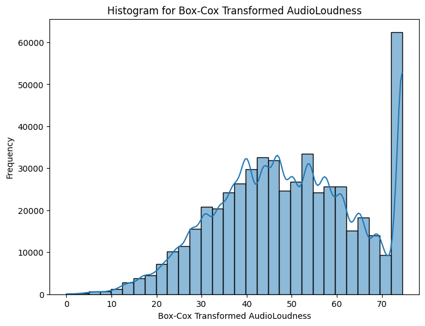

Preliminary Steps (Downloading Data)
from google.colab import userdata
import os
os.environ["KAGGLE_KEY"] = userdata.get('KAGGLE_KEY')
os.environ["KAGGLE_USERNAME"] = userdata.get('KAGGLE_USERNAME')
!kaggle competitions download -c playground-series-s5e9
playground-series-s5e9.zip: Skipping, found more recently modified local copy (use --force to force download)
!unzip playground-series-s5e9.zip
Archive: playground-series-s5e9.zip
replace sample_submission.csv? [y]es, [n]o, [A]ll, [N]one, [r]ename: A
inflating: sample_submission.csv
inflating: test.csv
inflating: train.csv
Kaggle Project: Song BPM Prediction
Another day, another Kaggle project! This time, we’re going to be working on a Song BPM prediction project. Let’s dive straight in!
Examining the data
After accepting the terms of the project, we can take a look at the data we’ll be working with. Firstly, we have to load in some of the libraries we’ll need for this project
import pandas as pd
import numpy as np
import matplotlib.pyplot as plt
import seaborn as sns
Next, we’ll load the data from their CSV files and inspect them.
train_data = pd.read_csv('train.csv')
test_data = pd.read_csv('test.csv')
train_data.head()
| id | RhythmScore | AudioLoudness | VocalContent | AcousticQuality | InstrumentalScore | LivePerformanceLikelihood | MoodScore | TrackDurationMs | Energy | BeatsPerMinute | |
|---|---|---|---|---|---|---|---|---|---|---|---|
| 0 | 0 | 0.60361 | -7.63694 | 0.0235 | 0.000005 | 0.000001 | 0.051385 | 0.409866 | 290716 | 0.826267 | 147.53 |
| 1 | 1 | 0.639451 | -16.2676 | 0.07152 | 0.444929 | 0.349414 | 0.170522 | 0.65101 | 164520 | 0.1454 | 136.16 |
| 2 | 2 | 0.514538 | -15.9536 | 0.110715 | 0.173699 | 0.453814 | 0.029576 | 0.423865 | 174496 | 0.624667 | 55.3199 |
| 3 | 3 | 0.734463 | -1.357 | 0.052965 | 0.001651 | 0.159717 | 0.086366 | 0.278745 | 225567 | 0.487467 | 147.912 |
| 4 | 4 | 0.532968 | -13.0564 | 0.0235 | 0.068687 | 0.000001 | 0.331345 | 0.477769 | 213961 | 0.947333 | 89.5851 |
train_data.info()
<class 'pandas.core.frame.DataFrame'>
RangeIndex: 524164 entries, 0 to 524163
Data columns (total 11 columns):
# Column Non-Null Count Dtype
--- ------ -------------- -----
0 id 524164 non-null int64
1 RhythmScore 524164 non-null float64
2 AudioLoudness 524164 non-null float64
3 VocalContent 524164 non-null float64
4 AcousticQuality 524164 non-null float64
5 InstrumentalScore 524164 non-null float64
6 LivePerformanceLikelihood 524164 non-null float64
7 MoodScore 524164 non-null float64
8 TrackDurationMs 524164 non-null float64
9 Energy 524164 non-null float64
10 BeatsPerMinute 524164 non-null float64
dtypes: float64(10), int64(1)
memory usage: 44.0 MB
train_data.describe()
| id | RhythmScore | AudioLoudness | VocalContent | AcousticQuality | InstrumentalScore | LivePerformanceLikelihood | MoodScore | TrackDurationMs | Energy | BeatsPerMinute | |
|---|---|---|---|---|---|---|---|---|---|---|---|
| count | 524164 | 524164 | 524164 | 524164 | 524164 | 524164 | 524164 | 524164 | 524164 | 524164 | 524164 |
| mean | 262081.5 | 0.632843 | -8.37901 | 0.0744432 | 0.262913 | 0.11769 | 0.178398 | 0.555843 | 241904 | 0.500923 | 119.035 |
| std | 151313.3 | 0.156899 | 4.61622 | 0.0499394 | 0.22312 | 0.131845 | 0.118186 | 0.22548 | 59326.6 | 0.289952 | 26.4681 |
| min | 0 | 0.0769 | -27.5097 | 0.0235 | 0.000005 | 0.000001 | 0.0243 | 0.0256 | 63973 | 0.000067 | 46.718 |
| 25% | 131041. | 0.51585 | -11.5519 | 0.0235 | 0.069413 | 0.000001 | 0.077637 | 0.403921 | 207099.9 | 0.254933 | 101.07 |
| 50% | 262081.5 | 0.634686 | -8.25249 | 0.066425 | 0.242502 | 0.074247 | 0.166327 | 0.564817 | 243684.1 | 0.5118 | 118.748 |
| 75% | 393122.3 | 0.739179 | -4.91229 | 0.107343 | 0.396957 | 0.204065 | 0.268946 | 0.716633 | 281851.7 | 0.746 | 136.687 |
| max | 524163 | 0.975 | -1.357 | 0.256401 | 0.995 | 0.869258 | 0.599924 | 0.978 | 464723.2 | 1 | 206.037 |
I’ve gone ahead and run three methods: info(), head(), and describe() to gein some preliminary insight into our data. Our goal here is to predict the BeatsPerMinute variable, this will be a Regression problem.
I do notice some tiny variables repeating in some columns (5.36e-06, 1.07e-06). This may distort our results, so lets go ahead and smooth these small values out to 0.
placeholder_cols = ['AcousticQuality', 'InstrumentalScore']
for col in placeholder_cols:
train_data[col] = train_data[col].replace(1.07e-06, 0)
print("Data cleaning complete. Placeholder values have been replaced.")
print(train_data.head())
Data cleaning complete. Placeholder values have been replaced.
id RhythmScore AudioLoudness VocalContent AcousticQuality \
0 0 0.603610 -7.636942 0.023500 0.000005
1 1 0.639451 -16.267598 0.071520 0.444929
2 2 0.514538 -15.953575 0.110715 0.173699
3 3 0.734463 -1.357000 0.052965 0.001651
4 4 0.532968 -13.056437 0.023500 0.068687
InstrumentalScore LivePerformanceLikelihood MoodScore TrackDurationMs \
0 0.000000 0.051385 0.409866 290715.6450
1 0.349414 0.170522 0.651010 164519.5174
2 0.453814 0.029576 0.423865 174495.5667
3 0.159717 0.086366 0.278745 225567.4651
4 0.000000 0.331345 0.477769 213960.6789
Energy BeatsPerMinute
0 0.826267 147.53020
1 0.145400 136.15963
2 0.624667 55.31989
3 0.487467 147.91212
4 0.947333 89.58511
Next up, lets inspect our data and determine if we need to clean or prepare it at all. First, we should check for any null values.
train_data.isnull().sum()
| 0 | |
|---|---|
| id | 0 |
| RhythmScore | 0 |
| AudioLoudness | 0 |
| VocalContent | 0 |
| AcousticQuality | 0 |
| InstrumentalScore | 0 |
| LivePerformanceLikelihood | 0 |
| MoodScore | 0 |
| TrackDurationMs | 0 |
| Energy | 0 |
| BeatsPerMinute | 0 |
Thankfully, there are no null values! We can continue on with distribution and outlier analysis. Let us first examine the distributions of the numeric variables. To do this, we’ll use both a Box Plot and Histogram for each variable.
num_features = train_data.select_dtypes(include=[np.number]).columns.tolist()
num_features.remove("id") # remove id as it doesn't provide any data
train_data[num_features].hist(bins=30, figsize=(15,12), layout=(3,4))
plt.suptitle("Numerical Feature Histograms")
plt.show()

fig, axes = plt.subplots(4, 3, figsize=(15, 20))
axes = axes.flatten()
for i, col in enumerate(num_features):
sns.boxplot(x=train_data[col], ax=axes[i])
axes[i].set_title(f'Box Plot of {col}')
for j in range(i + 1, len(axes)):
fig.delaxes(axes[j])
plt.suptitle("Box Plots of Numerical Features")
plt.show()

There’s a lot to take in from these charts. Here are a few of my immediate thoughts:
- BeatsPerMinute: Nearly Normal, Bell-shaped distribution. Perfect for our target variable
- Rhythm Score: Bell-shaped
- AudioLoudness: Strong peak on the right side of the distribution
- VocalContent: Right-skew; Strong peak on the left side
- Acousitc Quality: Right-skew towards 0
- InstrumentalScore: Right-skew towards 0
- LivePerformanceLikelihood: Right-skew;
- MoodScore: More spread out distribution
- TrackDurationMs: Binomial distribution with two distinct hills
- Energy: Uniform distribution between 0-1
Many of our numeric variables have a strong concentration of points on one side of the data or the other.
Next up, let’s create a correlation matrix and see if there are any correlations between variables.
plt.figure(figsize=(10, 8))
sns.heatmap(train_data.corr(), annot=True, cmap='coolwarm')
plt.title('Correlation Matrix')
plt.show()

Overall, the data has pretty weak linear correlations. A linear regression is unlikely to work in this case, and a non-linear regression approach is likely the answer.
Before, we continue I do want to address some of the feature distributions, such as the left-skewed distribution in AudioLoudness. Let’s go ahead and apply a logarithmic transformation to smooth out the shape.
from scipy.stats import boxcox
min_loudness = train_data['AudioLoudness'].min()
# Add a constant slightly larger than the absolute minimum to ensure all values are positive
constant = abs(min_loudness) + 1
# Apply the Box-Cox transformation
train_data['AudioLoudness_boxcox'], lambda_audio_loudness = boxcox(train_data['AudioLoudness'] + constant)
plt.figure(figsize=(8, 6))
sns.histplot(train_data['AudioLoudness_boxcox'], bins=30, kde=True)
plt.title('Histogram for Box-Cox Transformed AudioLoudness')
plt.xlabel('Box-Cox Transformed AudioLoudness')
plt.ylabel('Frequency')
plt.show()

The distribution for AudioLoudness looks a bit better now! Lets move on and begin defining and training the model. For this projecft, I’m going to train a LightGBM regressor model.
train_data["AudioLoudness"] = train_data["AudioLoudness_boxcox"]
import lightgbm as lgb
target_var = "BeatsPerMinute"
features_list = [col for col in train_data.columns if col != target_var]
features_list.remove("id")
features_list.remove("AudioLoudness_boxcox")
X_train = train_data[features_list]
y_train = train_data[target_var]
X_test = test_data[features_list]
lgbm_model = lgb.LGBMRegressor(random_state=492)
lgbm_model.fit(X_train, y_train)
[LightGBM] [Info] Auto-choosing col-wise multi-threading, the overhead of testing was 0.105526 seconds.
You can set `force_col_wise=true` to remove the overhead.
[LightGBM] [Info] Total Bins 2295
[LightGBM] [Info] Number of data points in the train set: 524164, number of used features: 9
[LightGBM] [Info] Start training from score 119.034899
And in a couple lines of code, we have trained our model! Now, next up is to create a submission csv.
And in a couple lines of code, we have trained our model! Now, next up is to create a submission csv.
predictions = lgbm_model.predict(X_test)
submission_df = pd.DataFrame({'id': test_data['id'], 'BeatsPerMinute': predictions})
submission_df.to_csv('submission.csv', index=False)
Submitting our results to Kaggle and we wind up receiving the score: 26.40144. This places us at 1796th place as of the submission! There is a lot more we can perform from here, such as hyperparameter optimization, either by hand or using a library such as FLAML. Additionally, we could look at creating new features that may better predict the data (ex: Energy * Rhythm may prove useful with a correlation of some sort)